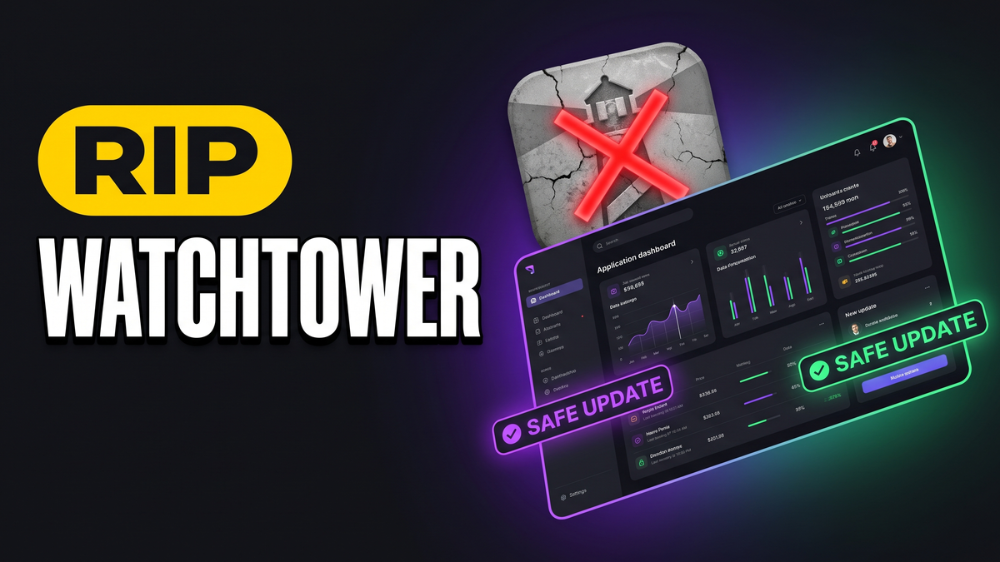
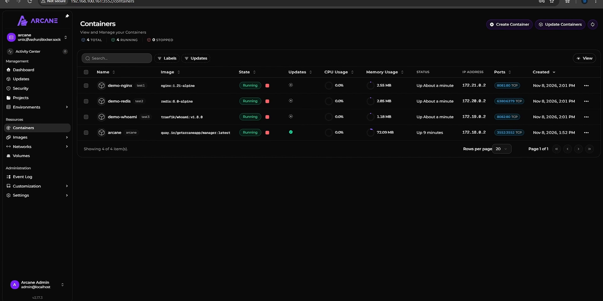
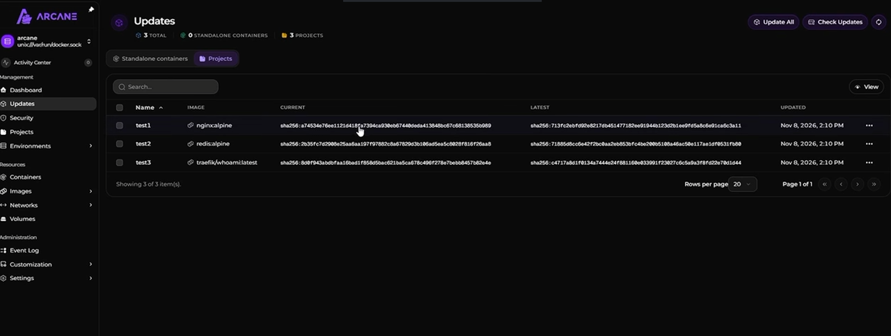
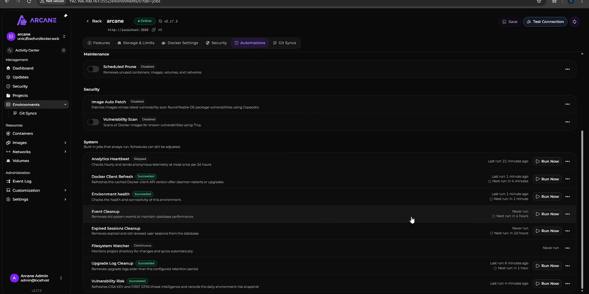

Watchtower Is Dead: Why Arcane Is the Safer Docker Auto-Update Manager

For years, setting up a new Docker host followed an almost universal checklist: install Docker, configure your reverse proxy, deploy your application stacks, and install Watchtower to pull newer container images while you slept. It felt like automated maintenance bliss.
Then came the morning surprises. A routine 3:00 AM update pulled an unannounced major database release (like upgrading PostgreSQL 15 directly to PostgreSQL 16), leaving the container crashed in an endless boot loop because the disk volume required manual table migration. Or an upstream web application pushed a broken build that upstream maintainers reverted within six hours, but Watchtower pulled it immediately during the bug window.
In December 2025, the maintainers behind containrrr/watchtower officially archived the GitHub repository. Active development, bug fixes, and security patches ceased entirely.
Relying on an unmaintained updater with direct read-write access to your host Docker socket is a severe security and stability hazard. We need an updater that understands maintenance safety: delayed pull policies, version boundary locks, per-container toggles, and automatic container recovery. That tool is Arcane.
1. Project Abandonment: Repository archived on GitHub in December 2025 with zero ongoing vulnerability patching.
2. Zero Release Delay: Immediately pulls new images within minutes of release, exposing hosts to day-one upstream bugs.
3. Database Destruction: Blindly pulls major version tag updates without validating volume schema compatibility.
What Is Arcane?
Arcane is an open-source, web-first container management and automated update system designed specifically to eliminate unmonitored production outages. Packaged as ghcr.io/getarcaneapp/manager:latest, Arcane pairs a responsive dashboard with an update scheduling engine.
Unlike Watchtower, which acts as a silent background daemon with no graphical overview, Arcane gives you complete visibility into image digests, registry updates, and container health:
- Configurable Update Delays: Specify a mandatory waiting period (such as 24 or 48 hours) after a developer pushes an image before Arcane updates your container. If an upstream bug is identified and recalled, your server never downloads it.
- Major Version Locking: Keep critical services pinned to their minor version train (for example, staying within PostgreSQL 15.x releases instead of jumping to 16.0).
- Per-Container GUI Toggles: Enable or disable automatic updates per container with a simple switch inside the web interface without modifying YAML labels.
- Integrated Autoheal: Monitor container health checks and automatically restart containers that drop into an unhealthy status.
- Automated Disk Hygiene: Schedule recurring cron tasks to prune dangling images, stopped containers, and build cache.
- Docker Swarm Support: Manage rolling updates across full Docker Swarm clusters in addition to standalone nodes.
Step 1: Deploying Arcane with Docker Compose
To maintain security best practices, do not run management containers under the root user account. We will run Arcane under a standard home lab system user (such as techsimpld) that belongs to the local docker group.
1. Verify User and Docker Socket Permissions
Run the following commands on your host to verify your user ID and confirm your account can communicate with the Docker daemon without sudo:
id -u
# Example output: 1000
docker ps2. Generate an Application Encryption Key
Arcane encrypts stored registry credentials and database tokens at rest using a 32-byte secret key. Generate a random 64-character hex string using OpenSSL:
openssl rand -hex 32
Copy the generated string. You will supply this as the APP_KEY environment variable.
3. Write the Compose Configuration
Create a dedicated directory for Arcane and create your docker-compose.yml file:
mkdir -p /opt/arcane
cd /opt/arcane
nano docker-compose.ymlPaste the following configuration:
services:
arcane:
image: ghcr.io/getarcaneapp/manager:latest
container_name: arcane
restart: unless-stopped
ports:
- "3552:3552"
environment:
- APP_KEY=PASTE_YOUR_GENERATED_OPENSSL_HEX_KEY_HERE
- PORT=3552
volumes:
- /var/run/docker.sock:/var/run/docker.sock
- arcane_data:/app/data
volumes:
arcane_data:
driver: localStart the Arcane container in the background:
docker compose up -dVerify the logs to confirm the internal SQLite database and web server initialized cleanly:
docker logs -f arcane
Open your browser and navigate to http://<your-server-ip>:3552 to open the web interface.

Step 2: Inspecting Image Updates & SHA Tag Comparison
When you click the Updates tab in the navigation bar, Arcane displays all running containers and their current image registries. Click the Check for Updates button in the upper right corner.
Arcane queries the remote container registries (Docker Hub, GitHub Container Registry, Quay, etc.) and compares the remote image manifest against the local image digest stored in your Docker engine.

Understanding SHA256 Hashes vs. Semantic Version Tags
One subtle detail you will notice in Arcane is how it communicates updates. When developers push a container build to a tag like :latest, the tag string itself does not change, but the underlying SHA256 digest changes completely.
Arcane shows both: the human-readable tag name and the exact SHA256 fingerprint. You can click View Tag Details to inspect the remote commit layers before deciding whether to trigger a manual update or allow scheduled automation to proceed.
Step 3: Setting Update Delays, Autoheal, and Cron Schedules
To configure safe automated policies, navigate to Settings in the left sidebar and select the Updates & Maintenance tab.

1. Configure the Update Delay Window
Locate the Update Delay setting. By default, this is set to 0 hours (immediate updating). Change this value to 24 or 48 hours.
When configured with a 48-hour delay, Arcane marks a newly published image as pending, but holds off on deploying it until 48 hours have elapsed since the registry publication timestamp. If an upstream regression causes widespread user complaints, the upstream developer has ample time to issue a hotfix before your server pulls the bad build.
2. Enable the Autoheal Daemon
In the settings pane, toggle Enable Autoheal to the active position.
If a container has a configured Docker HEALTHCHECK in its image (or specified in Compose) and enters an unhealthy state for more than three consecutive check intervals, Arcane automatically restarts the container. This prevents minor network timeouts or memory leaks from taking down self-hosted services permanently while you are away from your desk.
3. Schedule Recurring Pruning Jobs
Every time an updater downloads a new container image, the old image layers are orphaned as "dangling" data on your disk. Over six months, this can consume tens of gigabytes of NVMe storage.
Arcane features an integrated Cron Job Scheduler. You can configure a standard cron expression (for example, 0 4 * * 0 for every Sunday at 4:00 AM) to automatically run:
docker image prune -a --forceThis safely strips unused images while keeping active container images intact.
4. Disabling Updates on Critical Production Containers
Return to the Updates tab. For sensitive infrastructure (such as PostgreSQL, MySQL, Vaultwarden, or your primary Traefik/Nginx reverse proxy), toggle the Auto Update switch to Off.
These containers will still be audited for updates, and you will receive notifications when new versions exist, but Arcane will never pull or restart them without manual confirmation from you.
Arcane vs. Watchtower vs. What's Up Docker (WUD) vs. Dockhand
Here is how the four major container maintenance and management tools compare across core functional areas:
| Feature | Arcane | Watchtower | What's Up Docker (WUD) | Dockhand |
|---|---|---|---|---|
| Project Status | Active Development | Archived (Dec 2025) | Active Maintenance | Active Development |
| Web Dashboard | Yes (Dedicated Port 3552) | No (CLI / Log Only) | Yes (Port 3000) | Yes (Port 3000) |
| Update Delay Policy | Yes (Configurable Hours) | No (Immediate Only) | No (Immediate Only) | Manual trigger only |
| Per-Container GUI Toggles | Yes (Single Click) | No (Requires Labels) | Yes (Label & Trigger Based) | Manual update button |
| Autoheal Integration | Built-in | No (Requires willfarrell/autoheal) | No | No |
| Docker Swarm Support | Yes (Swarm Services) | Limited (Rolling issues) | Yes | Standalone Hosts Only |
| In-Container File Editor | No | No | No | Yes (Full File Tree) |
Notice the clear operational division: If you need comprehensive container administration, live file browsing inside containers, and remote host linking, Dockhand is your best primary manager. But when it comes to automated image updating, maintenance delays, autoheal recovery, and scheduled disk maintenance, Arcane is the ideal specialized companion.
Step-by-Step: Migrating from Watchtower to Arcane
Retiring Watchtower is straightforward because it operates without writing persistent data. Follow this 3-step migration checklist:
1. Stop and Remove the Watchtower Container
Locate your existing Watchtower container and remove it from your host:
docker stop watchtower
docker rm watchtower
If you deployed Watchtower via a Docker Compose stack, navigate to that directory and execute docker compose down.
2. Clean Up Redundant Watchtower Container Labels
Watchtower relies on container labels such as com.centurylinklabs.watchtower.enable=false. While leaving these labels in your Compose files will not cause errors, removing them keeps your application YAML files clean and standard.
3. Launch Arcane and Assign Container Policies
Start your Arcane container as detailed in Step 1, log into the dashboard, set your global update delay to 48 hours, enable autoheal, and review your container list to disable auto-updates on database engines.
Frequently Asked Questions
Can Arcane monitor containers running across multiple Docker hosts?
Arcane connects directly to the local Docker socket or a Docker Swarm manager node. To manage multiple independent standalone hosts, you can deploy a lightweight Arcane instance per host or leverage Docker over TLS if you prefer centralized reporting.
What happens if an image update fails midway through pulling?
Arcane pulls and verifies the complete image layers before stopping the active container. If the registry connection drops or the digest fails verification during download, the existing container remains running without interruption.
Does Arcane send notifications to Discord, Telegram, or Gotify?
Yes. Arcane includes a webhook notification engine under the Notifications settings menu. You can configure outgoing webhooks to Gotify, Discord, Slack, and generic HTTP endpoints to receive alerts whenever an update is applied or autoheal triggers a restart.
Key Takeaways & Next Steps
Retiring Watchtower in favor of Arcane protects your container infrastructure from unmonitored midnight outages. With automated 48-hour release delays, major version locks, autoheal self-recovery, and scheduled image pruning, your self-hosted services stay updated without sacrificing uptime.
Explore our companion guides and web utilities to build out your homelab:
- Replace Portainer with our complete guide to Dockhand Multi-Server Management.
- Compare container engines in our Docker vs. Podman In-Depth Guide.
- Build an unbreachable remote connection with Cloudflare Zero Trust Tunnels.
- Generate clean compose stacks with our Docker Compose & .env Generator.